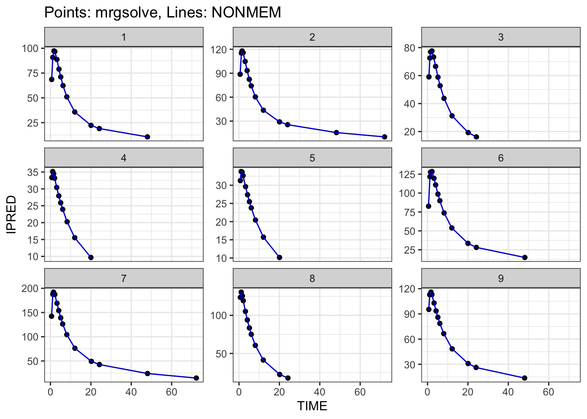
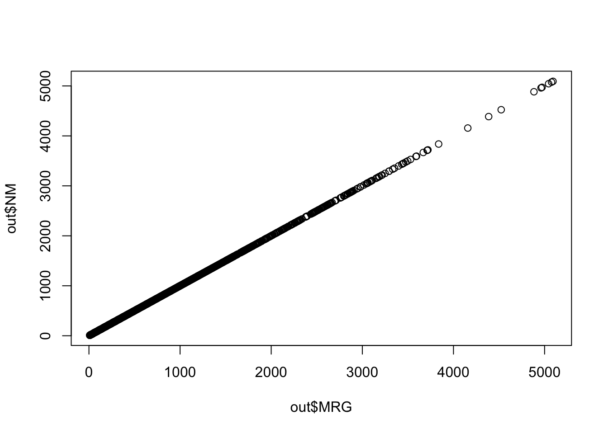

?mrgsim1 Introduction
I wrote a post in May 2022 about using NONMEM-generated PRED from a completed estimation run to validate the coding of the equivalent model in mrgsolve. This post will show you how to do a similar validation, but this time using IPRED to validate the translation.
To help with the big picture, the steps are
- Read in the model estimation data set
- Read in NONMEM
$TABLEoutputs which includeIPREDand all the modelETAvalues - Join the table outputs to the model estimation data set
- Simulate from the candidate mrgsolve model, using the
etasrc = "data.all"argument tomrgsim(), new in version 1.0.8 - Compare NONMEM-generated
IPREDagainst mrgsolve-generatedIPRED
I’ll detail these steps in the following sections or you can jump to the complete workflow in Section 7.
You can get more information on how this all works in the mrgsim() help topic
with mrgsolve 1.0.8 installed or check here.
2 Setup
library(mrgsolve)
library(readr)
library(dplyr)
library(here)
library(glue)3 Leveraging outputs from NONMEM for validation
3.1 Population-level predictions
The basic idea from the previous post was to use PRED which is generated by NONMEM for output in your $TABLE files.
tab1 <- read_table("model/pk/106/106.tab", skip = 1)
head(tab1)# A tibble: 6 × 8
NUM IPRED NPDE CWRES DV PRED RES WRES
<dbl> <dbl> <dbl> <dbl> <dbl> <dbl> <dbl> <dbl>
1 1 0 0 0 0 0 0 0
2 2 68.5 -0.633 -0.512 61.0 60.6 0.422 -0.533
3 3 90.8 0.403 0.126 91.0 78.5 12.4 0.142
4 4 97.3 1.68 1.44 122. 83.0 39.2 1.63
5 5 96.7 1.71 1.69 126. 82.2 43.9 1.91
6 6 88.7 -0.0334 -0.0527 84.7 75.5 9.20 -0.0941This comes automatically when you create $TABLE outputs unless you suppress it with the NOAPPEND option.
PRED is the population-predicted value or the prediction with all ETA (\(\eta\)) and EPS (\(\epsilon\)) set to 0. When we validate a model based on PRED, we can verify several different aspects of the model, including handling of the data set (e.g. observations and dosing interventions), the covariate model, and the coding of the differential equations to name a few. What this approach doesn’t check is the placement of the \(\eta\)s in the model.
3.2 Individual-level predictions
Notice we also have IPRED, or the individual-predicted value, in the $TABLE output shown above. I put IPRED into the output and it’s a common practice to do this.
106.ctl
$ERROR
IPRED = A(2)/V2
$TABLE IPRED FILE = 106.tabThe IPRED is a model prediction like PRED, but it includes the individual \(\eta\) generated by NONMEM. Note that these \(\eta\) are not random draws from \(\Omega\); but rather they are post-hoc \(\eta\) values for specific individuals, conditional on each individual’s data in the problem. If we can validate against IPRED rather than PRED, we can check all aspects of the data and model that we were checking with PRED, but also check the \(\eta\) placements as well, including any transformations of \(\eta\).
To get \(\eta\) into the output, I wrote
106.ctl
$TABLE ETAS(1:LAST) FILE = 106par.tabThis will give outputs ETA1, ETA2, ETA3 etc. In this example, I put these in a separate $TABLE file, but you don’t have to do this.
tab2 <- read_table("model/pk/106/106par.tab", skip = 1)
head(tab2)# A tibble: 6 × 9
NUM CL V2 Q V3 KA ETA1 ETA2 ETA3
<dbl> <dbl> <dbl> <dbl> <dbl> <dbl> <dbl> <dbl> <dbl>
1 1 2.62 39.8 3.02 53.0 1.39 -0.113 -0.198 -0.144
2 2 2.62 39.8 3.02 53.0 1.39 -0.113 -0.198 -0.144
3 3 2.62 39.8 3.02 53.0 1.39 -0.113 -0.198 -0.144
4 4 2.62 39.8 3.02 53.0 1.39 -0.113 -0.198 -0.144
5 5 2.62 39.8 3.02 53.0 1.39 -0.113 -0.198 -0.144
6 6 2.62 39.8 3.02 53.0 1.39 -0.113 -0.198 -0.144I have both tab1 and tab2 data frames keyed by a NUM column that numbers the rows of the output; this makes it easy to generate a single data frame which includes all outputs
tab <- left_join(tab1, tab2, by = "NUM")
head(tab)# A tibble: 6 × 16
NUM IPRED NPDE CWRES DV PRED RES WRES CL V2 Q V3
<dbl> <dbl> <dbl> <dbl> <dbl> <dbl> <dbl> <dbl> <dbl> <dbl> <dbl> <dbl>
1 1 0 0 0 0 0 0 0 2.62 39.8 3.02 53.0
2 2 68.5 -0.633 -0.512 61.0 60.6 0.422 -0.533 2.62 39.8 3.02 53.0
3 3 90.8 0.403 0.126 91.0 78.5 12.4 0.142 2.62 39.8 3.02 53.0
4 4 97.3 1.68 1.44 122. 83.0 39.2 1.63 2.62 39.8 3.02 53.0
5 5 96.7 1.71 1.69 126. 82.2 43.9 1.91 2.62 39.8 3.02 53.0
6 6 88.7 -0.0334 -0.0527 84.7 75.5 9.20 -0.0941 2.62 39.8 3.02 53.0
KA ETA1 ETA2 ETA3
<dbl> <dbl> <dbl> <dbl>
1 1.39 -0.113 -0.198 -0.144
2 1.39 -0.113 -0.198 -0.144
3 1.39 -0.113 -0.198 -0.144
4 1.39 -0.113 -0.198 -0.144
5 1.39 -0.113 -0.198 -0.144
6 1.39 -0.113 -0.198 -0.1444 Join NONMEM outputs with the model estimation data
Now, we’ll read in the model estimation data set and join on the $TABLE outputs, again by the NUM column
nmdata <- read_csv("data/derived/analysis3.csv", na = '.')
data <- left_join(tab, nmdata, by = "NUM")Note that we’ve put tab on the left to ensure that we only include records that were not IGNOREd by NONMEM.
This data object includes the following:
- The model estimation data, including dosing records, observation records and covariates
- All of the post-hoc \(\eta\) values
- The individual predicted model outputs (
IPRED)
5 Simulate with etasrc = "data.all"
Now we want to use mrgsolve to simulate its version of IPRED and we’ll compare that result to the NONMEM-generated IPRED as our validation of the mrgsolve setup.
mod <- mread_cache("106.txt", project = here("model/pk"))This model is already capturing IPRED
outvars(mod)$cmt
[1] "GUT" "CENT" "PERIPH"
$capture
[1] "IPRED" "Y" We will do this with the etasrc argument to mrgsim() which is new with version 1.0.8. etasrc lets you instruct mrgsolve to look at the data set for columns named ETA1, ETA2, etc and use those values for \(\eta\) rather than generating new, random \(\eta\) from \(\Omega\).
The simulation looks like this
out <- mrgsim(
mod,
data = data,
etasrc = "data.all",
obsonly = TRUE,
Req = "MRG = IPRED",
carry_out = "NM = IPRED, PRED"
)In the above mrgsim() call, we use Req to request the IPRED output from the mrgsolve model and we use the carry_out argument to copy the IPRED value from the input data set, the NONMEM-generated value. I’ve also asked for PRED to get copied into the output so we can compare.
head(out) ID TIME NM PRED MRG
1 1 0.61 68.532 60.583 68.53195
2 1 1.15 90.812 78.548 90.81228
3 1 1.73 97.276 83.040 97.27646
4 1 2.15 96.738 82.222 96.73794
5 1 3.19 88.706 75.487 88.70573
6 1 4.21 78.916 67.797 78.91573Now we have IPRED generated by mrgsolve (MRG) and by NONMEM (NM).
6 Check the result
You can check the result graphically

plot(out$MRG, out$NM)
Or by some summary of the discrepancy
summary(out$MRG - out$NM) Min. 1st Qu. Median Mean 3rd Qu. Max.
-6.018e-02 -2.568e-03 -1.118e-05 -2.444e-05 2.710e-03 5.683e-02 summary(100*(out$MRG - out$NM)/out$NM) Min. 1st Qu. Median Mean 3rd Qu. Max.
-5.731e-03 -6.735e-04 -5.256e-06 8.200e-07 7.114e-04 4.720e-03 7 Complete workflow
Here’s the complete workflow. For projects, I put this into a standalone script called validate.R and just use it to check my simulation models as model development is going on.
validate.R
run <- 106
# Read the analysis data set
nmdata <- read_csv("data/derived/analysis3.csv", na = '.')
# Read NM table outputs
tab1 <- read_table(glue("model/pk/{run}/{run}.tab"), skip = 1)
tab2 <- read_table(glue("model/pk/{run}/{run}par.tab"), skip = 1)
tab <- left_join(tab1, tab2, by = "NUM")
# Join
data <- left_join(tab, nmdata, by = "NUM")
# The mrgsolve simulation model
mod <- mread_cache(glue("{run}.txt"), project = here("model/pk"))
# Simulate
out <- mrgsim(
mod,
data = data,
etasrc = "data.all",
obsonly = TRUE,
Req = "MRG = IPRED",
carry_out = "NM = IPRED"
)
# Compare
summary(out$MRG - out$NM) Min. 1st Qu. Median Mean 3rd Qu. Max.
-6.018e-02 -2.568e-03 -1.118e-05 -2.444e-05 2.710e-03 5.683e-02